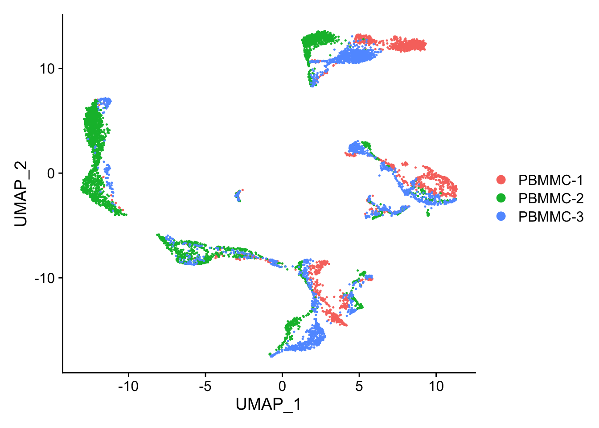
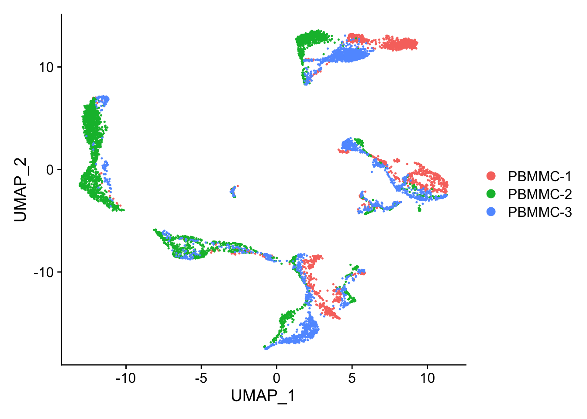

Seurat::DimPlot(seu, reduction = "umap")
Let’s have a look at the UMAP again. Although cells of different samples are shared amongst ‘clusters’, you can still see seperation within the clusters:
Seurat::DimPlot(seu, reduction = "umap")
To perform the integration, we split our object by sample, resulting into a list with each sample as an element. We perform standard preprocessing (log-normalization), and identify variable features individually for each dataset based on a variance stabilizing transformation ("vst").
seu_list <- Seurat::SplitObject(seu, split.by = "orig.ident")
for (i in 1:length(seu_list)) {
seu_list[[i]] <- Seurat::NormalizeData(seu_list[[i]])
seu_list[[i]] <- Seurat::FindVariableFeatures(seu_list[[i]], selection.method = "vst", nfeatures = 2000,
verbose = FALSE)
}After this, we prepare the integration by selecting integration anchors:
seu_anchors <- Seurat::FindIntegrationAnchors(object.list = seu_list, dims = 1:25)And finally perform the integration:
seu_int <- Seurat::IntegrateData(anchorset = seu_anchors, dims = 1:25)After running IntegrateData, the Seurat object will contain an additional element of class Assay with the integrated (or ‘batch-corrected’) expression matrix. This new Assay is called integrated, and exists next to the already existing RNA element with class Assay.
Use the Assay integrated only for clustering and visualisation. It will give unexpected results during e.g. differential gene expression analysis. Therefore, use the RNA element for other analyses.
We can then use this new integrated matrix for clustering and visualization. Now, we can scale the integrated data, run PCA, and visualize the results with UMAP.
No need to re-run FindVariableFeatures, these were automatically set by calling IntegrateData.
First, switch the default Assay to integrated (in stead of RNA).
Seurat::DefaultAssay(seu_int) <- "integrated"In order to redo the clustering, scale the integrated data, run the PCA and the UMAP again (using the function ScaleData, RunPCA and RunUMAP). After that, generate the UMAP plot. Did the integration perform well?
saveRDS(seu_int, "seu_day2-2.rds")Clear your environment: